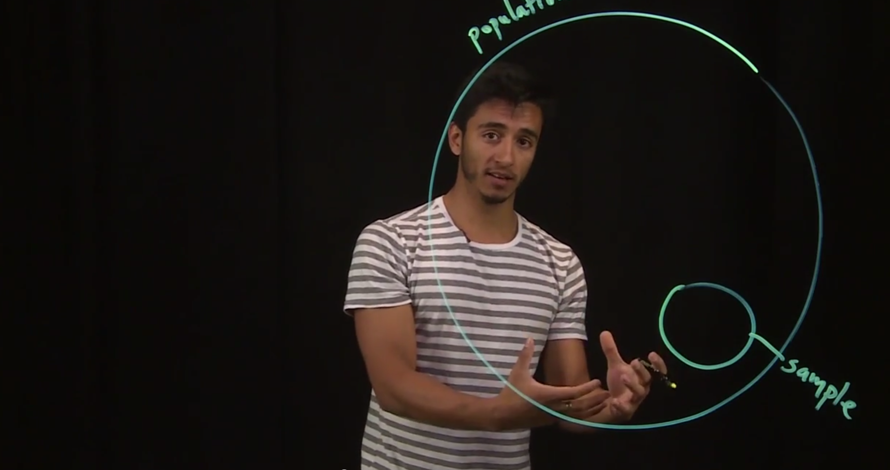

2. Probability & Statistics
Random Variables
Watch: Random Variables

Listen: Random Variables
Read: Random Variables
- Random variables, which are studied in probability and statistics, are a huge part of econometrics. This means that in order to understand econometrics, you need to first understand random variables.
- To understand random variables, you can think of variables the way you have in the past, where X can take any value — for example, x can take the value 2, or 3, or 243,534. What makes random variables special, is that there is a defined set of values it can take (called sample space), and each value has a probability associated with it (called probability distribution).
- For example, a random variable can be the set of values you get when you toss a six-sided die, and their corresponding probabilities. You know that the only values X can take are 1, 2, 3, 4, 5, and 6. This set of values is the sample space for our six-sided die. This is what the notation looks like: X = {1, 2, 3, 4, 5, 6}. And since there are 6 values for X, we say that n = 6. We also know that the probability for each outcome (given our dice is fair) is ⅙.
- In the context of econometrics, an interesting question we can ask ourselves is… How is hourly wage affected by someone’s level of education? In this context, hourly wage is a random variable, and so is years of education. And that is random variables.
Population vs Sample
Watch: Population vs Sample

Listen: Population vs Sample
Read: Population vs Sample
- Sometimes we are faced with pivotal questions in economics, such as, what is the average weight across all dogs in the world? Or, what is the average income across all americans?
- It would be nice to be able to collect data on every single dog in the world (or american in the US) to be able to draw these conclusions. However, it is nearly impossible to collect all of this data, and extremely costly.
- For this reason it is useful to understand populations and samples, and the distinction between the two.
- A population is the entire set of something: the entire set of all dogs in the world, of all americans in the United States, of all planets in the universe. A sample is a subset of a population that is used to draw conclusions regarding such population.